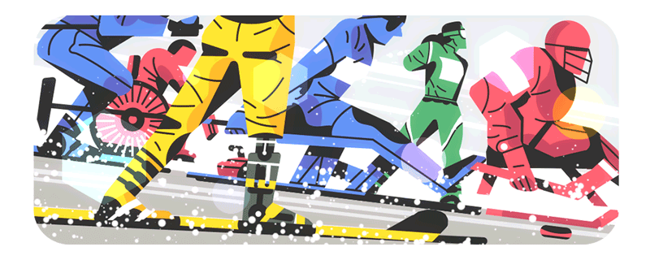
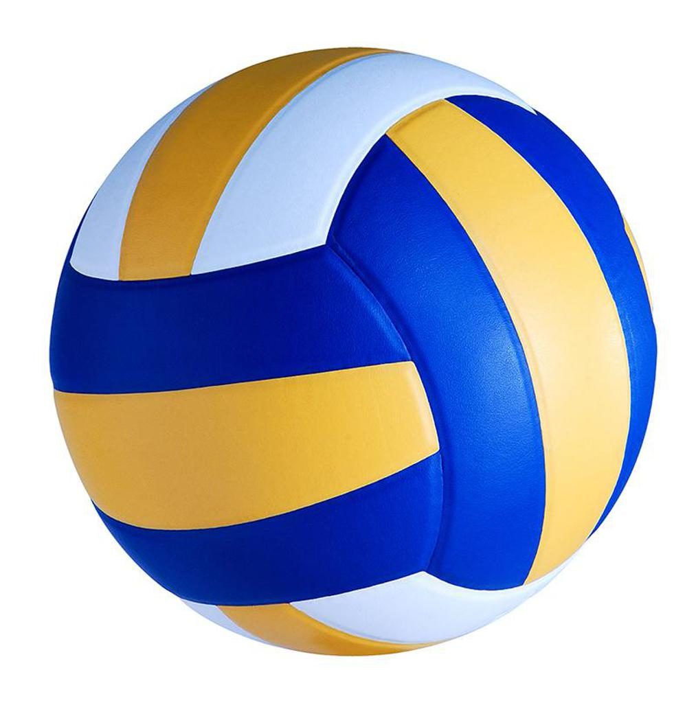
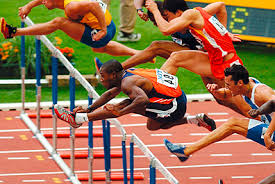
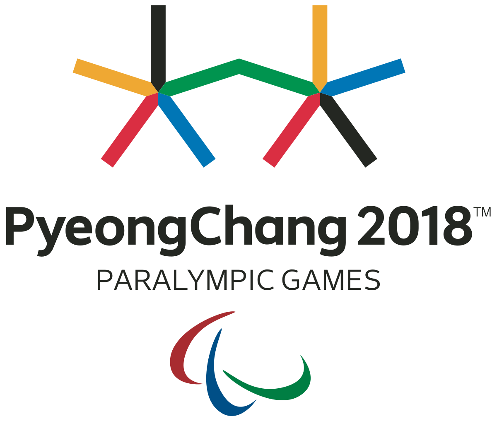
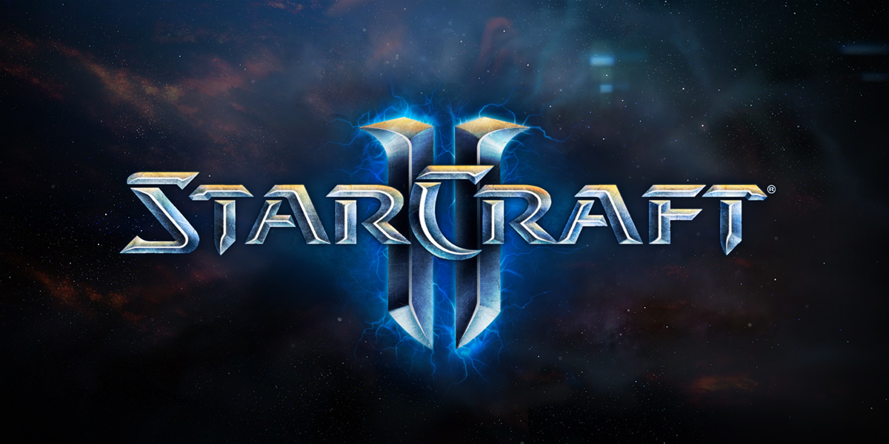
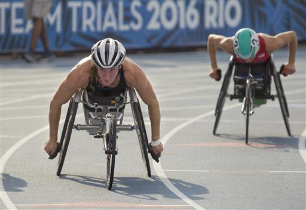
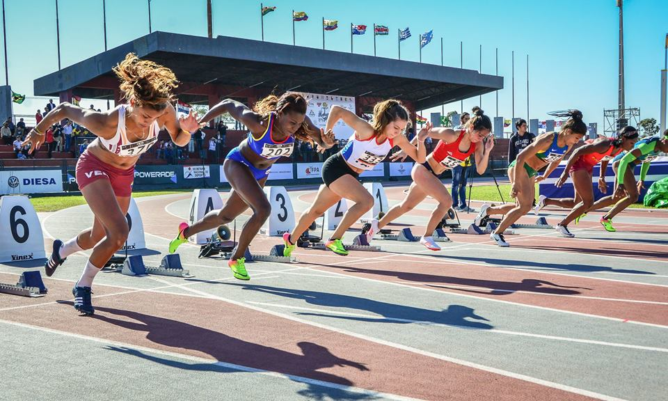
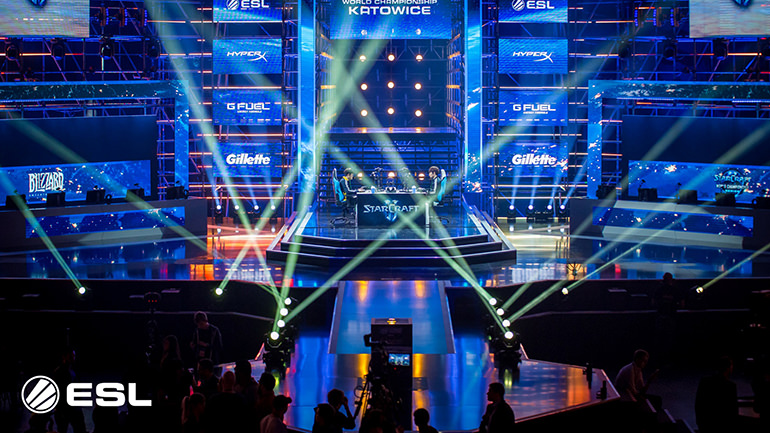
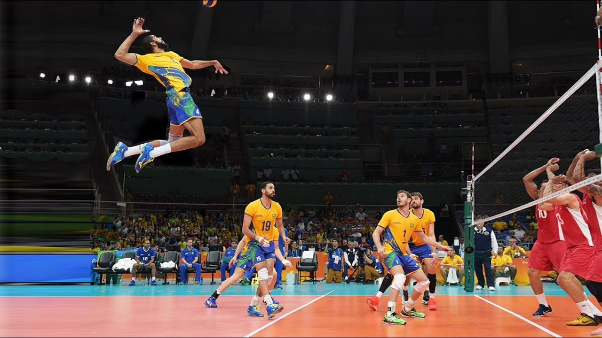

|  | The 2018 Winter Paralympics or the PyeongChang 2018 Paralympic Winter Games, were an international multi-sport event for athletes with disabilities governed by the International Paralympic Committee (IPC), that was held in Pyeongchang County, Gangwon Province, South Korea, from 9 to 18 March 2018. Athletes representing 49 National Paralympic Committees are participating in these Games, which mark the first time that South Korea has hosted the Winter Paralympics. It is the second Paralympics held in the country, after the 1988 Summer Paralympics in Seoul. The United States topped the medal table with 36 total medals and 13 gold medals. Host nation South Korea placed 16th with 3 total medals and won its first gold medal at a Winter Paralympics. |
| StarCraft II: Wings of Liberty is a military science fiction real-time strategy video game developed and published by Blizzard Entertainment. It was released worldwide in July 2010 for Microsoft Windows and Mac OS X.[6] A sequel to the 1998 video game StarCraft and its expansion set Brood War, the game is split into three installments: the base game with the subtitle Wings of Liberty, an expansion pack Heart of the Swarm, and a stand-alone expansion pack Legacy of the Void. |
|  | The complete rules are extensive, but simply, play proceeds as follows: a player on one of the teams begins a 'rally' by serving the ball (tossing or releasing it and then hitting it with a hand or arm), from behind the back boundary line of the court, over the net, and into the receiving team's court. The receiving team must not let the ball be grounded within their court. The team may touch the ball up to 3 times but individual players may not touch the ball twice consecutively. Typically, the first two touches are used to set up for an attack, an attempt to direct the ball back over the net in such a way that the serving team is unable to prevent it from being grounded in their court. |
|  | Organized athletics are traced back to the Ancient Olympic Games from 776 BC. The rules and format of the modern events in athletics were defined in Western Europe and North America in the 19th and early 20th century, and were then spread to other parts of the world. Most modern top level meetings are conducted by the International Association of Athletics Federations and its member federations. |
     